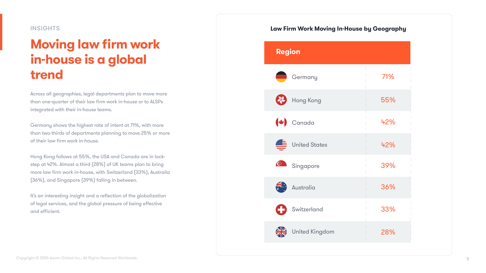
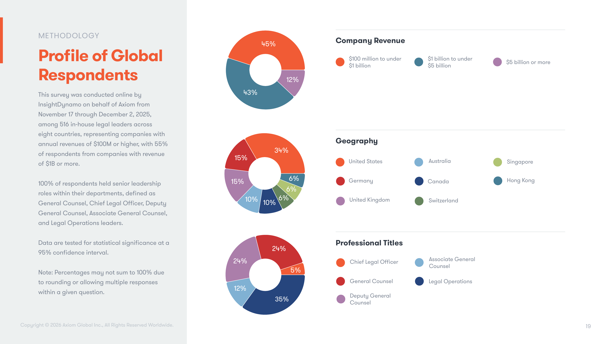
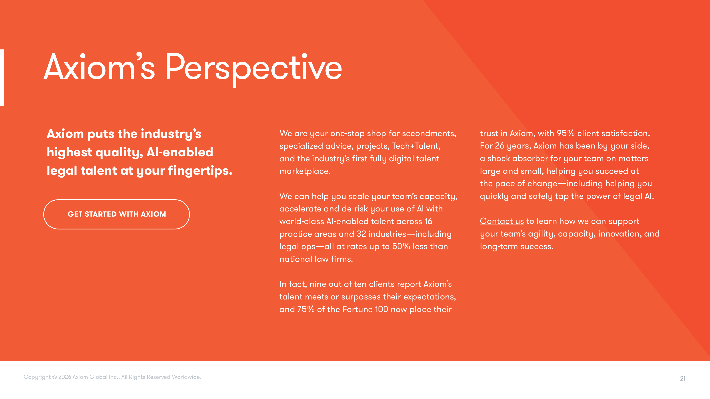
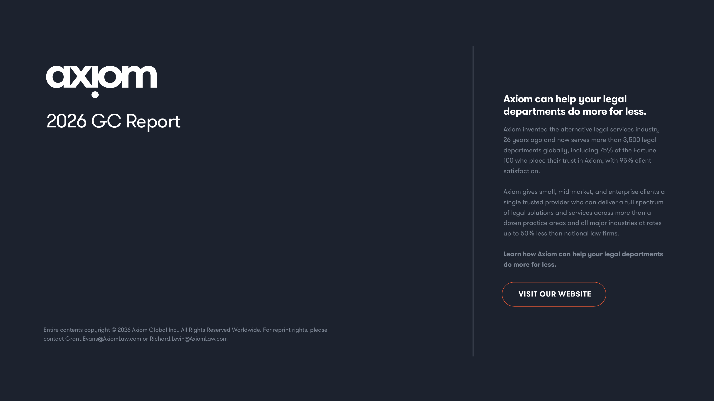

Executive Summary
A market at a threshold moment
In-house leaders are reconsidering who should do which legal work. The report points to a decisive shift toward in-house teams and alternative providers, accelerated by pricing pressure, AI, and efficiency mandates.
plan to move certain law firm work in-house or to alternative providers within 24 months.
say law firm pricing is very close to or already too high to justify.
have adopted AI in some capacity.
are using AI at scale.
Nearly all in-house teams are moving more law firm work in-house
More than half expect to move up to 25% of law firm work back in-house or to ALSPs, while another third expect to move up to 40%.
Key Findings
Work is shifting away from the traditional firm model
Across department sizes and geographies, respondents expect more work to be handled by in-house teams or ALSPs integrated with those teams.
Law firm work moving in-house / to ALSPs

Germany shows the highest rate of intent to move 25% or more of law firm work in-house.
Provider satisfaction
more likely to report extreme satisfaction with ALSPs than with law firms.
Satisfaction
ALSPs outperform on intensity of satisfaction
Combined satisfaction is high for both ALSPs and law firms, but extreme satisfaction is three times higher for alternative providers.
Pricing Pressure
Four in five leaders say law firm rates are too high
The distribution clusters in the 7-8 range, signaling that rates are approaching the point where cost cannot be justified.
Legacy Habits
Reliance on firms is often inertia, not strategy
see ALSPs as an alternative for day-to-day legal work.
reflexively use law firms as a relief valve.
continue to send work to law firms out of habit or inertia.
Barriers
Cultural resistance reinforces reliance on law firms
Internal resistance, risk concerns, budget constraints, and procurement hurdles all impede change.
Barriers to changing providers
Budgets
Budget increases have not removed efficiency pressure
Two-thirds of teams received a budget increase, yet nearly all respondents still report continuing pressure to improve efficiency.
budget increased
under pressure to improve efficiency
AI adoption gap
Adopted AI in some capacity
Using AI at scale
AI
In-house teams are in AI “no man’s land”
Adoption is nearly universal, but scaled implementation lags. Leaders cite provider complexity, vendor lock-in, limited research time, and lack of legal tech experience.
AI Productivity
Productivity gains remain modest without scale
Most teams report 5% to 20% productivity improvement, and none reported gains above 30%.
Efficiency gains from legal AI

senior in-house legal leaders surveyed across eight countries, with data tested at a 95% confidence interval.
Axiom’s Perspective
Axiom can help legal departments do more for less.
Axiom provides AI-enabled legal talent across practice areas and industries at rates up to 50% less than national law firms.
Visit Axiom
